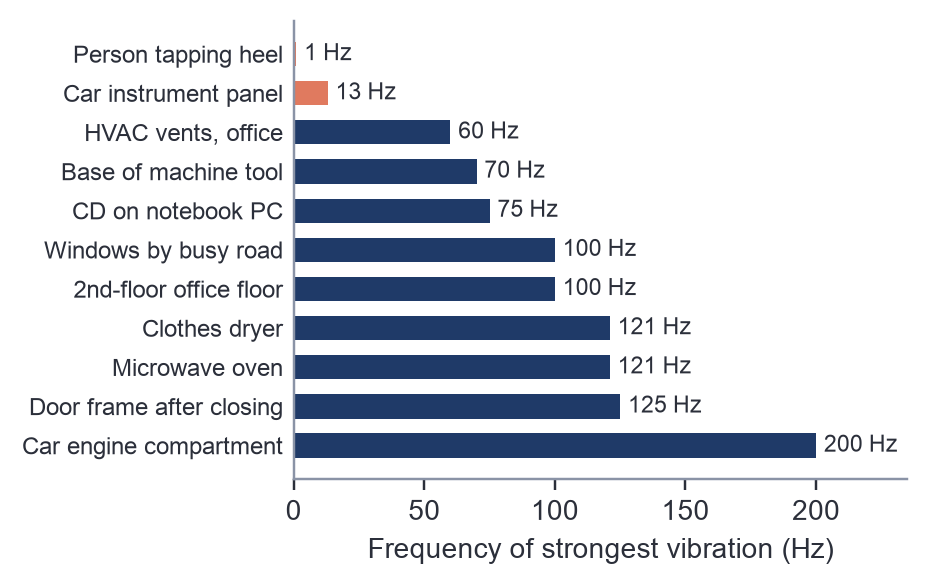
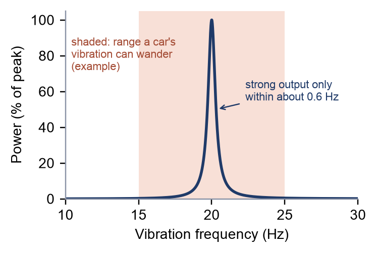
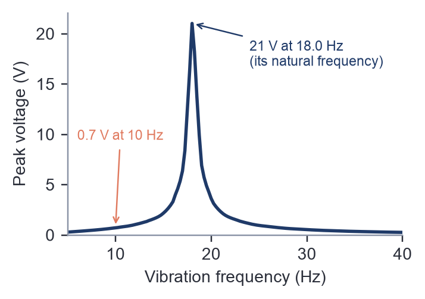
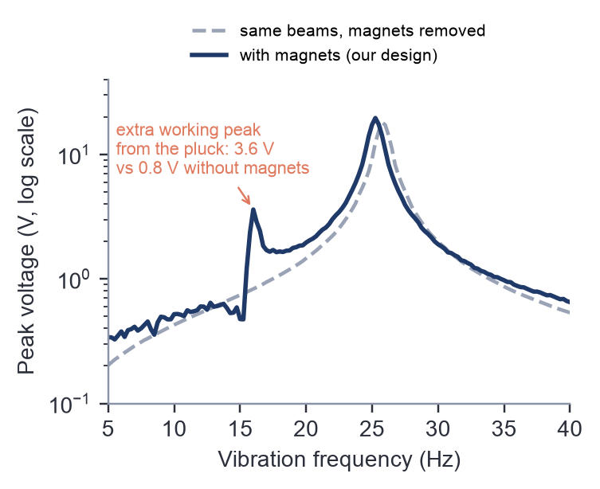
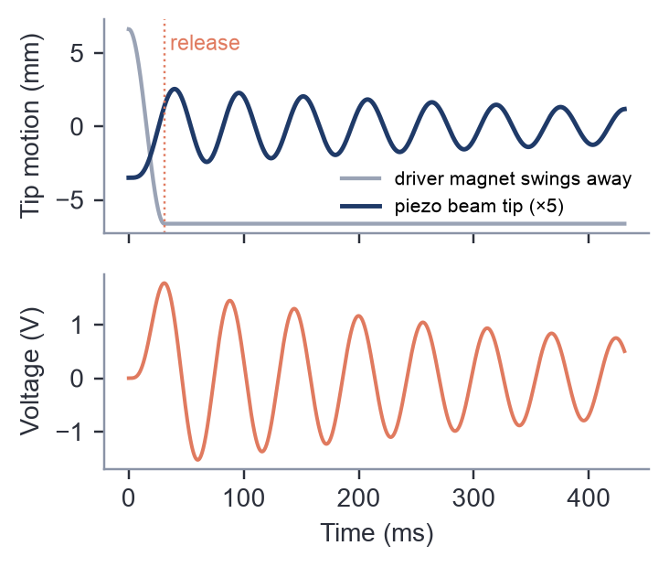

The future of energy is not only about big power plants. It is also about billions of small devices that need a little power, all the time, in places that are hard to reach. At the end of 2025 there were about 21.1 billion connected IoT (Internet of Things) devices, and the number is expected to reach 39 billion by 2030 (IoT Analytics). Many are wireless sensors that watch the health of bridges, roads, machines, and vehicles. One sensor node needs only tens to hundreds of microwatts (Roundy et al.).

Most of these sensors run on batteries. Roundy et al. found that batteries are fine for short lifetimes, but "another solution is required for long lifetimes." Every battery must eventually be replaced by a person who travels to the sensor, and the old battery becomes waste. Lithium-ion batteries thrown in the trash caused more than 240 fires at 64 U.S. waste facilities from 2013 to 2020 (U.S. EPA).
Vibration is a free energy source that is already where sensors are: car dashboards, office vents, windows next to busy roads, and machines (Figure A). A vibration energy harvester turns this shaking into electricity. Everyday vibration is hard to harvest for three reasons:

Most harvesters today are linear resonators: a beam built to vibrate at one natural frequency, like a guitar string tuned to one note. They make strong power only when the vibration matches that note (Tang et al.). With light damping, the strong-output window can be less than 1 Hz wide (Figure B). If the car speeds up and the frequency moves, output collapses.
Another approach hits or plucks the piezoelectric part with a hard object so it "rings" at its own frequency. This works with slow vibration, but the touching parts wear, and plucking with a hard pick can damage brittle piezoelectric material (Pillatsch et al.).
Design a harvester that turns slow, changing everyday vibration into electricity for wireless sensors, without any parts that strike or rub each other.
Other ambient energy sources fall short in many sensor locations. Solar cells work very well in direct sunlight but are not enough in dim offices or dark places. Heat can power a sensor only with a temperature difference, and Roundy et al. note that it is hard to find more than a 10 °C difference across a 1 cm³ device. Vibration, on the other hand, is present inside cars, engines, buildings, and machines, day or night. Roundy et al. also showed that a harvester's possible power is proportional to A²/ω (acceleration squared divided by frequency). This means the slow, strong fundamental vibration of a source carries the most usable energy, so a harvester should target low frequencies.
In 1880, Pierre and Jacques Curie found that some crystals make a voltage when they are squeezed or stretched. This is the piezoelectric effect (Erturk and Inman). Modern harvesters bond a thin layer of PZT (a lead zirconate titanate ceramic) to a flexible beam that is clamped at one end (a cantilever). Each time the beam bends, the PZT is strained and makes a voltage (Figure C). Two PZT layers together form a bimorph. PZT is strong in bending but brittle, so it should not be hit or scraped.
Early harvesters (Williams and Yates) were simple spring-mass systems tuned to one frequency. Roundy et al. measured real sources and found most of their energy at low frequency. Because a single tuned beam has a narrow window, researchers looked for broadband methods (Tang et al.). Külah and Najafi showed frequency up-conversion: a slow, large part catches and releases small, fast cantilevers, so slow vibration (1–100 Hz) can still drive a fast converter. Pozzi and Zhu plucked piezo bimorphs with steel picks on a knee brace, and Pillatsch et al. replaced the picks with magnets because picks can damage brittle piezo material.
(1) Target low frequency. (2) One tuned beam is too narrow for changing vibration. (3) Up-conversion lets a slow part drive a piezo beam. (4) Magnets can do the plucking without touching. Our three possible solutions follow this path.
This is the standard vibration harvester. A flexible beam with a PZT bimorph near the clamp and a weight (tip mass) at the free end is bolted to a vibrating surface. The tip mass and beam stiffness are chosen so the beam's natural frequency matches the source, for example 18 Hz for a vehicle. When the surface shakes at that frequency, the beam swings much more than the surface itself, bends the PZT, and makes electricity for a sensor.

This is the easiest design to build: one 3D-printed PETG beam, one PZT bimorph, and a weight. We tested the idea with our own computer model. When we shook our 105 mm piezo beam without any magnets, it reached about 21 V peak at its 18 Hz natural frequency, but only 0.7 V at 10 Hz (Figure F). A small change in the source frequency removes most of the output.
| R1 Low frequency | Possible, but only with a long, heavy beam. | |
| R2 Non-contact | Nothing touches. | |
| R3 Range of frequencies | Fails: strong output only near one frequency. | |
| R4 Simple and passive | Fully passive. |
This design separates "catching" the vibration from "converting" it. A soft driver beam with a heavy mass is tuned low, so it swings even in slow vibration. A hard pick (plectrum) on its tip catches the end of a stiffer piezo beam, bends it, and then slips off. Freed, the piezo beam vibrates back and forth at its own higher natural frequency, like a plucked guitar string, and its PZT makes electricity. Pozzi and Zhu used this idea with steel picks on a knee brace, plucking PZT bimorphs during walking.
Plucked and impact harvesters have been built and tested in research labs (Pozzi and Zhu; Külah and Najafi). Building one needs a precise overlap between the pick and the beam, a pick material that is hard but smooth, and a strong clamp. The main problem is durability. The pick rubs and strikes the beam thousands of times a day. Pillatsch et al. state that plucking with plectra can damage the brittle piezo material, which is why they moved to magnets. As the pick wears, the overlap shrinks and each pluck gets weaker, so output drops over time. Contact also makes clicking noise and loses some energy as heat and sound at each hit.
| R1 Low frequency | The soft driver beam swings in slow vibration. | |
| R2 Non-contact | Fails: the pick strikes the piezo beam on every pluck. | |
| R3 Range of frequencies | The piezo rings at its own frequency regardless of input. | |
| R4 Simple and passive | Passive, but the pick overlap must be set precisely and maintained. |
MagPluck keeps the good idea of Solution #2 (a slow driver plucks a piezo beam) but replaces the pick with a pair of magnets, so nothing ever touches. Two cantilevers share one base. The driver beam carries a large magnet and is tuned to about 16 Hz, so it swings with slow vehicle vibration. The piezo beam carries a PZT bimorph and a small magnet. The two magnets face each other across an air gap of about 39 mm (Figure H).

All parts are buildable: 3D-printed PETG beams, off-the-shelf N52 magnets, and a commercial PZT bimorph. Like Külah and Najafi and Pillatsch et al., a slow part releases a faster one, but through a magnetic field. We checked the design with a computer model of both beams, the magnetic force, and the piezo circuit:
| R1 Low frequency | The driver is tuned to about 16 Hz; the piezo beam stays at 18–26 Hz. | |
| R2 Non-contact | Magnets pluck across an air gap kept at 1.5 times the snap distance. | |
| R3 Range of frequencies | Two working peaks instead of one; full plucks so far only near the driver's frequency. | |
| R4 Simple and passive | No motors or power needed; only the gap must be set once. |
Our most plausible solution is MagPluck (Solution #3). It is a small, passive harvester that bolts onto a vibrating surface such as a car body panel. It turns slow vibration into electricity through a magnetic pluck, so no parts ever strike or rub each other. Figure J shows our digital model of the 105 mm version, drawn to scale from our design numbers.
| Driver / piezo natural frequency | 16.1 Hz / 18.0 Hz |
| Snap distance (magnets would jump together) | 21.3 mm |
| Closest approach allowed (1.5 × snap) | 32.0 mm |
| Magnetic force margin needed / achieved | 1.5× / 1.61× |
| Model output at 2 m/s², 1 MΩ load | 7.9 V peak, about 28 µW average |
| Other versions (piezo beam length) | 85 mm and 95 mm, same idea |
We compared the three possible solutions against the four requirements from our problem statement. MagPluck is the only one that meets the low-frequency and non-contact requirements at the same time, and it adds a working band that a single tuned beam does not have.
| Solution | R1 | R2 | R3 | R4 | Reason for our decision |
|---|---|---|---|---|---|
| #1 Tuned resonant cantilever | Not selected: simple and contact-free, but strong output only within about 0.5 Hz of one frequency; our model gave 21 V at 18 Hz but 0.7 V at 10 Hz. | ||||
| #2 Contact-plucked up-converter | Not selected: handles slow, changing vibration, but the pick strikes the brittle piezo every cycle, so it wears, clicks, and can crack (Pillatsch et al.). | ||||
| #3 MagPluck | Selected: the pluck of #2 with the no-contact benefit of #1. Magnets raised output 2.1–3.9× over the same beams without magnets, and never touched in our model. |

A plain tuned beam (Solution #1) wastes most of the time it spends off its one frequency. In MagPluck, the driver beam collects the slow vibration and hands its energy to the piezo beam through the magnetic pull. In our model, at the driver's 16 Hz frequency, the same piezo beam made 3.3–7.9 V peak with magnets versus 0.8–3.7 V without them. Unlike Solution #2, no energy is lost to impact, and the parts do not wear down, so the output should not fade over the harvester's life.
Figure K shows the pluck itself. When the driver magnet swings away, the piezo beam keeps vibrating at its own frequency, keeping 73% of the pulled distance as free motion and producing about 1.8 V in one release.
Magnetic plucking is a known idea (Külah and Najafi; Pillatsch et al.). What our team adds is a simple two-beam design built from printed PETG and stock parts, sized for the 16–30 Hz band of vehicles, with a snap safety rule (closest approach at least 1.5 times the snap distance) that our model showed is needed to keep the magnets from sticking together.
Erturk, Alper, and Daniel J. Inman. Piezoelectric Energy Harvesting. John Wiley & Sons, 2011. https://doi.org/10.1002/9781119991151.
IoT Analytics. "State of IoT 2025: Number of Connected IoT Devices Growing 14% to 21.1 Billion Globally." IoT Analytics, Oct. 2025, iot-analytics.com/number-connected-iot-devices/.
Külah, Haluk, and Khalil Najafi. "Energy Scavenging From Low-Frequency Vibrations by Using Frequency Up-Conversion for Wireless Sensor Applications." IEEE Sensors Journal, vol. 8, no. 3, 2008, pp. 261–68. https://doi.org/10.1109/JSEN.2008.917125.
Pillatsch, Pit, Eric M. Yeatman, and Andrew S. Holmes. "A Piezoelectric Frequency Up-Converting Energy Harvester with Rotating Proof Mass for Human Body Applications." Sensors and Actuators A: Physical, vol. 206, 2014, pp. 178–85. https://doi.org/10.1016/j.sna.2013.10.003.
Pozzi, Michele, and Meiling Zhu. "Plucked Piezoelectric Bimorphs for Knee-Joint Energy Harvesting: Modelling and Experimental Validation." Smart Materials and Structures, vol. 20, no. 5, 2011, article 055007. https://doi.org/10.1088/0964-1726/20/5/055007.
Roundy, Shad, Paul K. Wright, and Jan Rabaey. "A Study of Low Level Vibrations as a Power Source for Wireless Sensor Nodes." Computer Communications, vol. 26, no. 11, 2003, pp. 1131–44. https://doi.org/10.1016/S0140-3664(02)00248-7.
Tang, Lihua, Yaowen Yang, and Chee Kiong Soh. "Toward Broadband Vibration-Based Energy Harvesting." Journal of Intelligent Material Systems and Structures, vol. 21, no. 18, 2010, pp. 1867–97. https://doi.org/10.1177/1045389X10390249.
U.S. Environmental Protection Agency. An Analysis of Lithium-ion Battery Fires in Waste Management and Recycling. EPA 530-R-21-002, July 2021, www.epa.gov/system/files/documents/2021-07/lithium-ion-battery-report-update-7.01_508.pdf.
Washington TSA. "Engineering Design." Washington Technology Student Association, 2026, www.washingtontsa.org/high-school-events/engineering-design. Accessed 18 Nov. 2026.
Williams, C. B., and R. B. Yates. "Analysis of a Micro-Electric Generator for Microsystems." Sensors and Actuators A: Physical, vol. 52, no. 1–3, 1996, pp. 8–11. https://doi.org/10.1016/0924-4247(96)80118-X.
Yenamandra, Akhil. "Design and Optimization of a Magnetically Plucked Piezoelectric Vibration Energy Harvester." Poster HS-EGSD-0192. Our team's starting design, re-checked and redesigned in this portfolio.
Resource types (11 total): peer-reviewed journal articles (6), a technical book, a government report (U.S. EPA), two websites (IoT Analytics and Washington TSA), and our team's earlier poster. All figures are original drawings, charts, and simulations made by our team from the cited data.